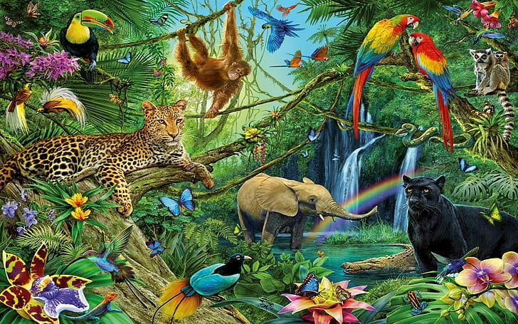

Once there was an adventurous jackal who frequently strayed into the village looking for food. The Village was filled with dogs that scared the jackal. Although he was scared of the dogs, the jackal loved food and travelled to the city again and again.One day, as he was going to enter a house, he heard barking. He was shocked to find a gang of dogs running towards the house. They looked violent and caused the jackal to panic. He ran and tumbled into a tub of blue dye. The dogs couldn’t see him and they ran another way.Now the jackal was completely blue from head to toe. He appeared very different from any other animal. The jackal was pleased as no one would be able to recognize him and he could easily fool anyone in the jungle.Just like he had thought, everyone in the jungle was surprised to see such an unusual animal.The small animals, the lion and the tiger all asked who he was and who had sent him.“I have been sent by God himself to look after you. I will now be the king of the jungle” The jackal said.The lion protested saying he had always been the king of the forest.“From now, that must change and all of you must serve me” The Jackal happily said.Some animals like the tiger protested and asked what would happen if they didn’t obey him. He replied saying God would destroy the entire jungle if they didn’t.
Scared for their lives and their jungle, the animals asked the blue Jackal what he would like them to do“Bring me lots of food” said the blue jackal promptly. The animals quickly scurried and returned with lots of food for the Jackal.He had so much food that he gave his leftovers to the other animals and told them that they had to serve him fresh food every day.He even threw out the pack of jackals from the forest because he knew that they could identify him some day. The blue Jackal was very happy with himself for fooling the entire forest and was happy to be away from the city dogs. But one day the banned pack of jackals was walking around the forest and howling loudly. The blue jackal began howling out of habit too. Because of this mistake, the other animals quickly identified him as a jackal and destroyed him.
Moral of the story:
Be true to yourself and don’t pretend to be someone you are not.